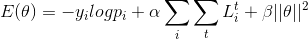
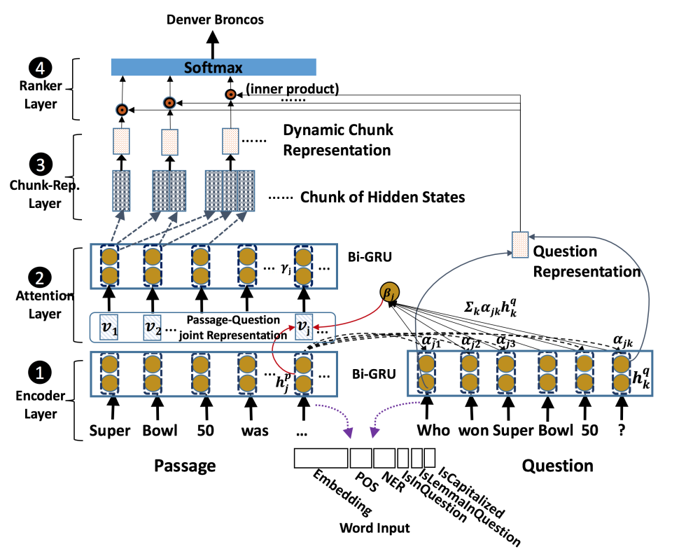
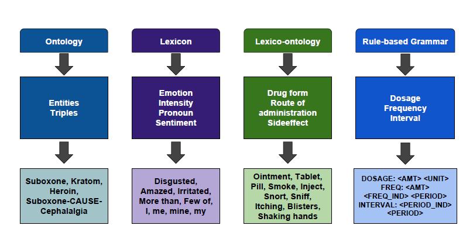
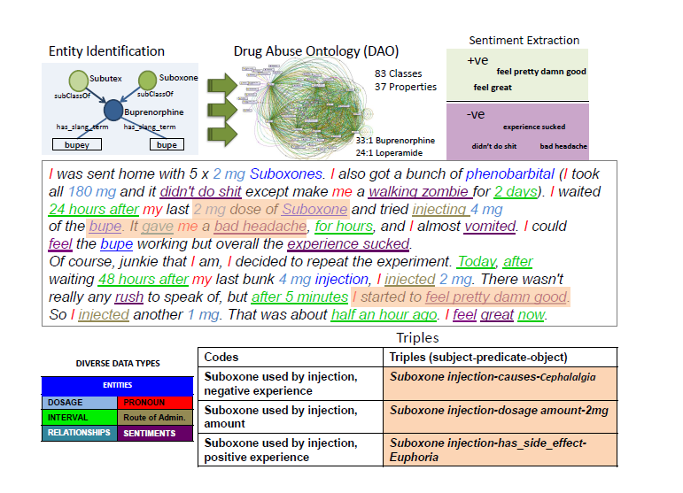
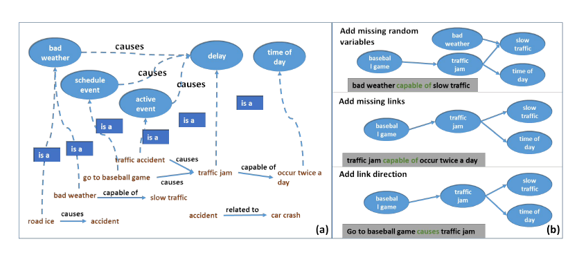
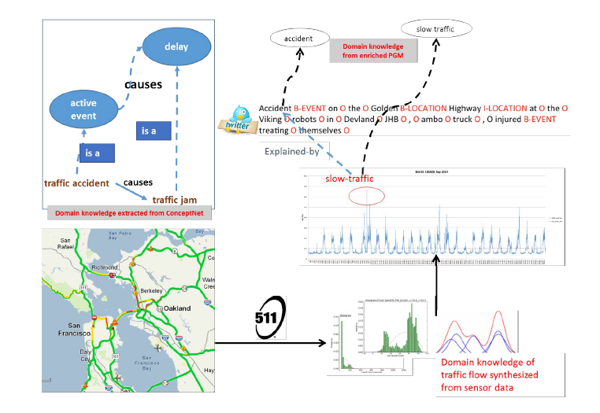
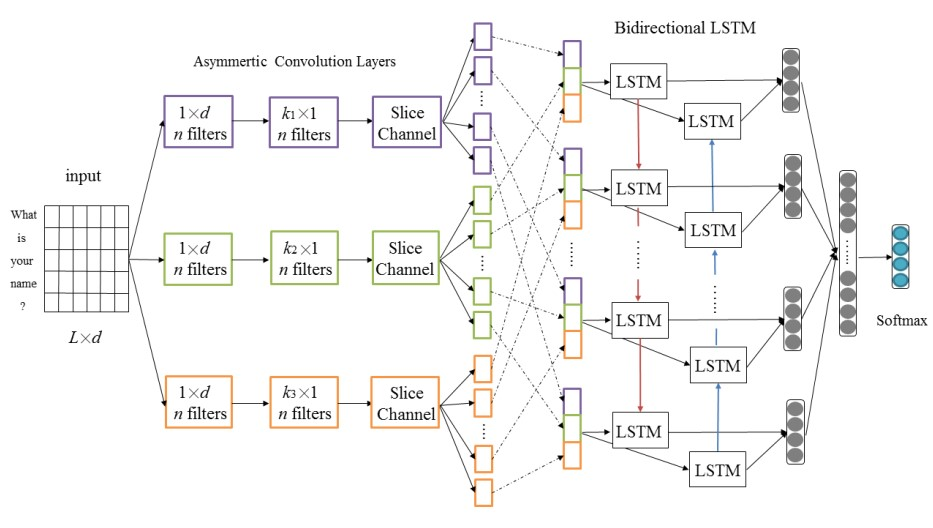

PaperWeekly 第十九期
引
本期的PaperWeekly一共分享四篇最近arXiv上发布的高质量paper，包括：情感分析、机器阅读理解、知识图谱、文本分类。人工智能及其相关研究日新月异，本文将带着大家了解一下以上四个研究方向都有哪些最新进展。四篇paper分别是：
1、Linguistically Regularized LSTMs for Sentiment Classification, 2016.11
2、End-to-End Answer Chunk Extraction and Ranking for Reading Comprehension, 2016.10
3、Knowledge will Propel Machine Understanding of Content: Extrapolating from Current Examples, 2016.10
4、AC-BLSTM: Asymmetric Convolutional Bidirectional LSTM Networks for Text Classification, 2016.11
Linguistically Regularized LSTMs for Sentiment Classification
作者
Qiao Qian, Minlie Huang, Xiaoyan Zhu
单位
State Key Lab. of Intelligent Technology and Systems, National Lab. for Information Science and Technology, Dept. of Computer Science and Technology, Tsinghua University
关键词
sentiment classification, neural network models, linguistically coherent representations,
文章来源
arXiv, 2016.11
问题
利用语言资源和神经网络相结合来提升情感分类问题的精度
模型
在LSTM和Bi-LSTM模型的基础上加入四种规则约束，这四种规则分别是: Non-Sentiment Regularizer,Sentiment Regularizer, Negation Regularizer, Intensity Regularizer.因此，新的loss function变为:

不同的规则约束对应不同的L函数
资源
1、Movie Review (MR) https://www.cs.cornell.edu/people/pabo/movie-review-data/
2、Stanford Sentiment Tree- bank (SST) http://nlp.stanford.edu/sentiment/treebank.html
相关工作
1、Neural Networks for Sentiment Classification
Empirical evaluation of gated recurrent neural networks on sequence modeling
Hybrid speech recognition with deep bidirectional lstm
2、Applying Linguistic Knowledge for Sentiment Classification
Sentiment classification of movie reviews using contextual valence shifters
简评
本文提出了一种新的基于语言资源约束和LSTM/Bi-LSTM的模型用于情感分类，并通过在MR和SST数据集上的实验和对RNN/RNTN,LSTM,Tree-LSTM,CNN的效果对比证明了这一模型的有效性。除此之外，本文还基于不同的约束进行了实验，证明的不同的约束在提高分类精度上的作用。本文实验丰富，效果的提升虽不显著，但新的模型确实在不同程度上克服了旧模型的一些不足。
End-to-End Answer Chunk Extraction and Ranking for Reading Comprehension
作者
Yang Yu, Wei Zhang, Kazi Hasan, Mo Yu, Bing Xiang, Bowen Zhou
单位
IBM Watson
关键词
Reading Comprehension, Chunk extraction, Ranking
文章来源
arXiv, 2016.10
问题
针对答案非定长的阅读理解任务，本文提出了DCR（dynamic chunk reader）模型
来从给定的文档中抽取可能的候选答案并进行排序。
模型
本文提出的模型结构共分为四部分，
1、Encoder Layer
如图所示，这部分是用双向GRU分别对文档（Passage）和问题（Question）进行编码。
2、Attention Layer
该层采用的方法与相关工作中的mLSTM类似，文档每个时刻的状态hjp都与问题中的每个状态hkq进行匹配得到一个权重向量αk，然后再根据该权重向量对问题的GRU隐层输出hp进行加权求和，得到文档中该时刻状态hjp对应的上下文向量βj，两个向量hjp和βj拼接在一起作为该时刻新的表示vj。最后再将上述与问题相关的新文档表示v通过双向GRU，得到文档最终的表示γ。

3、Chunk-Representation Layer
上一部分获得了与问题相关的文档表示γ，那么这部分则是考虑如何抽取候选答案，并获得候选答案的表示向量。本文提出了两种候选答案抽取方法，第一种方法是抽取所有满足训练数据中答案对应词性标注模式的候选项，第二种方法则是简单粗暴地确定一个候选项最大长度，然后遍历所有可能的候选项。至于候选答案的表示方式，本文将候选答案前向GRU的最后一个时刻状态和反向GRU第一个时刻状态拼接在一起作为最终候选项的表示。
4、Ranker Layer
已经获得了所有候选项的表示，那么接着就是对所有候选项进行打分排序。本文中打分是采用问题的表示和候选项的表示计算内积的方式得到的，本文训练过程中没有采用常见于排序任务的Margin ranking loss，而是先用softmax对所有候选项计算一个概率值，然后采用交叉熵损失函数进行训练。
本文在SQuAD数据集上进行实验，提出的方法效果比之前两篇SQuAD相关paper的方法有较大的提升。
资源
1、SQuAD https://rajpurkar.github.io/SQuAD-explorer/
相关工作
1、数据集相关论文
SQuAD: 100,000+ Questions for Machine Comprehension of Text
2、模型相关论文
MACHINE COMPREHENSION USING MATCH-LSTM
简评
在对文档和问题编码阶段，本篇论文提出的模型与之前mLSTM那篇paper有些相似。两篇论文中模型的主要区别在于：mLSTM那篇论文采用预测起始、终止位置的方法来确定答案，而本文则是先采用一些规则或Pattern的方法来抽取一些候选答案，然后再对候选答案进行排序。
联系方式
有DL或者NLP相关话题，欢迎讨论。destin.bxwang@gmail.com
Knowledge will Propel Machine Understanding of Content: Extrapolating from Current Examples
作者
Amit Sheth, Sujan Perera, and Sanjaya Wijeratne
单位
Kno.e.sis Center, Wright State University Dayton, Ohio, USA
关键词
Semantic analysis of multimodal data，Machine intelligence,Understanding complex text，EmojiNet
文章来源
arXiv, 2016.10
问题
利用知识和多模态数据来解决特定情况下的复杂文本的深层理解问题
模型
1、现知识库在处理特定领域问题中的局限性及解决方法
（1）知识库的杂乱
解决方法：采用自动判别技术，领域知识库索引技术，利用实体和关系的语义去判别所给定知识库领域中的相关部分。
（2）知识库数据的不完备和不充足
解决方法：使用 human-in-the-loop模型在真实的临床数据和已有的知识库中去发现更多的实体与实体之间的关系。
（3）知识表示技术和推理技术的局限性
解决方法：在单个属性的表示中加入了三元组和软逻辑的解释能力及其相关概率值和理由。
2、新的研究应用
（1）隐实体链接
（2）表情符号语义消歧
（3）理解和分析web论坛中关于药物滥用的相关讨论
利用相关背景知识加强不同种类信息的信息抽取模型

3、在健康领域中的文本理解模型

4、使用感知器和文本资料了解城市交通情况
(1)交通领域的概念关系网模型
(2)概率图模型

使用领域知识关联不同模态下的上下文相关数据

简评
本文主要举例说明了知识将推动机器对内容的理解。总体来看本文像一篇综述性的文章，给出了在知识库创建过程中所遇到的问题的解决方案，同时以实际案例来阐述知识在我们实际问题中应用。
AC-BLSTM: Asymmetric Convolutional Bidirectional LSTM Networks for Text Classification
作者
Depeng Liang and Yongdong Zhang
单位
Guangdong Province Key Laboratory of Computational Science, School of Data and
Computer Science, Sun Yat-sen University, Guang Zhou, China
关键词
ACNN; BLSTM; Text Classification
文章来源
arXiv, 2016.11
问题
本文提出了一个新的深度学习的模型–AC-BLSTM的模型（即：将ACNN和BLSTM组合在一起），用于句子和文章层面的分类。
模型
AC-BLSTM模型可以分成四个部分,如Figure 1所示：
1.输入: 输入是一个sentence，使用 ( L d )的矩阵表示，其中L表示句子中的L个词，d表示每个词的词向量的维度
2.ACNN(Asymmetric CNN): 传统的CNN采用的是 ( k d ) 大小的filter，ACNN则把filter的过程分成 ( 1 d ) 和 ( k 1 ) 的两个过程，相当于是把 ( k d ) 的filter做因式分解。
这一层的输入是一个 ( L d ) 的矩阵，对于n个尺度为( 1 d ) 和( ki 1 )的卷积层的输出是一个 [ (L - ki + 1) n ]的矩阵，如下图所示，本文采用了3种不同的卷积核，所以输出是3种不同的[ (L - ki + 1) n ]的矩阵（图中一个彩色的小方块表示 (1 * n)的向量）
3.连接层: 为了给BLSTM构造输入，连接层将3种不同卷积层的输出，以Ct^i表示第1种卷积层为LSTM第t个time step贡献的输入，则LSTM网络的第t步输入Ct = [Ct^1, Ct^2, Ct^3]，其中t属于{1,2,…,L-K+1}, K = max{ki}
4.BLSTM: LSTM能够很好的解决long time delay 和long range context的问题，但其处理是单向的，而BLSTM能够解决given point的双边的依赖关系，因此，本文选择了BLSTM网络层来学习ACNN输入的特征的dependencies
5.Softmax层: 为了应用于分类问题，本文在最后使用全连接层和softmax函数来实现分类。

资源
文章中使用的数据集
1、SST-1 http://nlp.stanford.edu/sentiment/index.html
2、SST-2 http://nlp.stanford.edu/sentiment/index.html
3、Movie Review(MR) https://www.cs.cornell.edu/people/pabo/movie-review-data/
4、SUBJ https://www.cs.cornell.edu/people/pabo/movie-review-data/
5、TREC http://cogcomp.cs.illinois.edu/Data/QA/QC/
6、YELP13 https://www.yelp.com/dataset_challenge
相关工作
1、Yoon Kim于2014年在Convolutional neural networks for sentence classification一文中提出将词向量和CNN结合，用于句子分类的模型。在该文中，Kim将不同长度的filter的组合在一起，且提出了static或者可以fine-tuning的word embedding模型
2、Zhou et al.则于2015年在A C-LSTM neural network for text classification一文中提出将CNN和LSTM叠加的模型，且使用固定的word embedding
3、Szegedy et al.于2015年在Rethinking the Inception Architecture for Computer Vision中提出了ACNN模型，这减少了参数的个数且提高了模型的表征
简评
这篇文章主要贡献就是提出了一个AC-BSLTM的模型用于文本分类，亮点就在于：ACNN可以在减少参数的个数的同时通过增加更多的非线性性来提高表达能力，而BLSTM能够捕捉输入的两端的信息。两者的结合就提高了分类的精度。但事实上，这两个网络模型都是现有的，本文的工作感觉只是两个网络的连接，在本质上没有太大的改进，且在分类精度上的提高也比较有限。
致谢
感谢@方嘉倩 @destin wang 和 @min279 三位童鞋的辛勤工作。